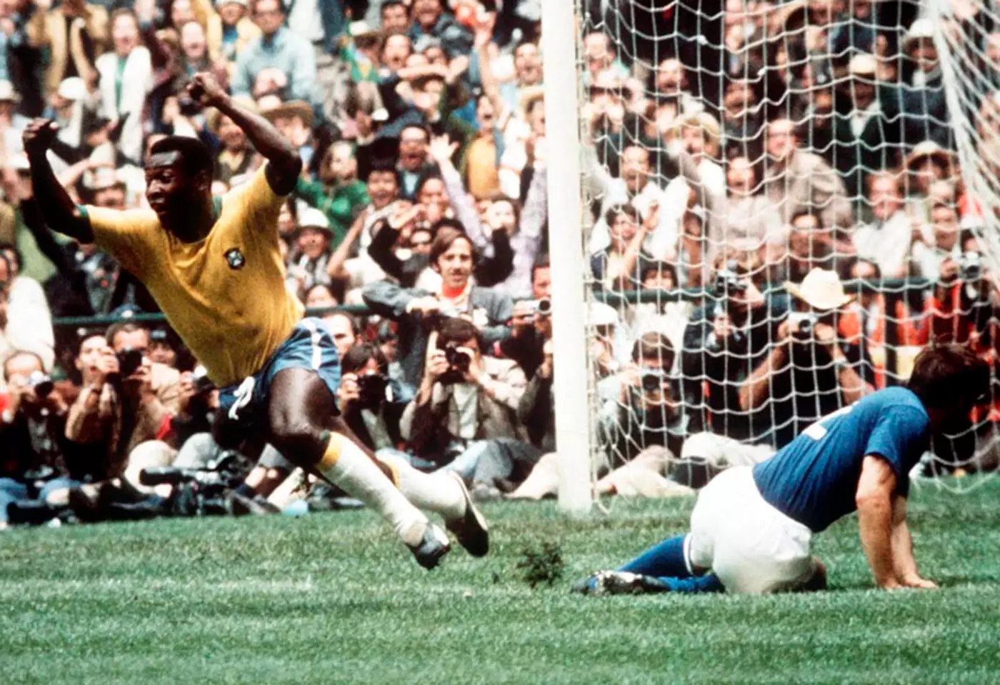

Soccer Accesories

Rank |
Country |
Points |
|---|---|---|
| 1 | Beligium | 1773 |
| 2 | France | 1732 |
| 3 | Brazil | 1669 |
| 4 | Croatia | 1635 |
| 5 | England | 1619 |
Soccer Memes!!!

Just 17 when he burst on the scene with Brazil's
first World Cup victory in 1958,
he missed much of the '62 title defense to
injury, but led the charge with a
Golden Ball-winning performance as the
Seleção cruised to their
third victory in four tries in 1970.
Meanwhile,
he dazzled crowds at home
and when his Santos club toured the world, earning the nickname "O Rei"
(The King) for his sublime efforts.
Pelé is credited with 1,283 career goals,
and while many of them came in semi-formal competition,
the mind-boggling total emphasizes his celestial
ranking in the game's history.

Argentinean countrymen, who were left grasping
for words after their savior produced the
"hand of God" score and the "goal of the century"
en route to a World Cup triumph in 1986. The fires
that fueled Maradona also led to the off-the-field escapades
that eroded his effectiveness, but there was no denying
the magnificence of his game at his peak.

A do-it-all midfielder, "Platoche" possessed exquisite
touch and a scorer's mentality, winning three
consecutive Ballon d'Ors while leading
Saint-Etienne and Juventus to league titles
and a host of other trophies